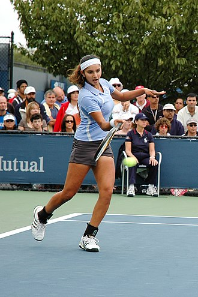
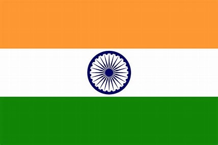

From Wikipedia, the free encyclopedia
Sania Mirza (ˈsaːnijaː ˈmirzaː; born 15 November 1986) is an Indian former professional tennis player. A former doubles world No. 1, she won six major titles – three in women's doubles and three in mixed doubles.[4][5] From 2003 until her retirement from singles in 2013, she was ranked by the Women's Tennis Association as the Indian No. 1 in singles.[6][7] Throughout her career, Mirza has established herself as one of the most known, highest-paid, and influential athletes in India.[8][9][10]
In singles, Mirza had wins over Svetlana Kuznetsova, Vera Zvonareva, and Marion Bartoli, as well as former world-number-ones Martina Hingis, Dinara Safina, and Victoria Azarenka. She is the highest-ranked Indian female player ever, peaking at world No. 27 in mid-2007. However, a major wrist injury caused her to shift to doubles. Mirza has achieved a number of firsts for women's tennis in India, including reaching the one million-US$ mark in career earnings (currently over US$7.2 million), winning a singles WTA Tour title, and winning a major title, as well as qualifying for (and eventually winning) the WTA Finals in 2014 in doubles partnering Cara Black, and defending her title the following year partnering Martina Hingis.[11] Mirza retired from professional tennis in February 2023.[12]
In singles, Mirza had wins over Svetlana Kuznetsova, Vera Zvonareva, and Marion Bartoli, as well as former world-number-ones Martina Hingis, Dinara Safina, and Victoria Azarenka. She is the highest-ranked Indian female player ever, peaking at world No. 27 in mid-2007. However, a major wrist injury caused her to shift to doubles. Mirza has achieved a number of firsts for women's tennis in India, including reaching the one million-US$ mark in career earnings (currently over US$7.2 million), winning a singles WTA Tour title, and winning a major title, as well as qualifying for (and eventually winning) the WTA Finals in 2014 in doubles partnering Cara Black, and defending her title the following year partnering Martina Hingis.[11] Mirza retired from professional tennis in February 2023.[12]
Mirza was named one of the "50 Heroes of Asia" by Time in October 2005.[14] In March 2010, The Economic Times named Mirza in its list of the "33 women who made India proud".[15] She was appointed as the UN Women's Goodwill Ambassador for South Asia during the International Day To End Violence Against Women on 25 November 2013.[16] She was named in Time magazine's 2016 list of the 100 most influential people in the world.[17]
Early life
[edit]Sania Mirza was born on 15 November 1986 in Mumbai to Hyderabadi Muslim parents Imran Mirza, a sports journalist,[18] and his wife Naseema, who worked in a printing business. Shortly after her birth, her family moved to Hyderabad where she and younger sister Anam were raised in a religious Sunni Muslim family. Anam is married to cricketer Mohammad Asaduddin, the son of former India national cricket team captain, Mohammad Azharuddin.[19] She is the distant relative of former cricket captains Ghulam Ahmed of India, and Asif Iqbal of Pakistan.[20] She took up tennis at the age of six. She has been coached by her father and also Roger Anderson.
She attended Nasr School in Hyderabad. She later graduated from the St. Mary's College, Hyderabad. Mirza also received an honorary degree of Doctor of Letters from the Dr. M.G.R. Educational and Research Institute in Chennai on 11 December 2008.[21]
Tennis career
[edit]2001–2003: Success on the ITF Junior Circuit
[edit]Mirza began playing tennis at the age of six, turning professional in 2003. She was trained by her father. Mirza won ten singles and thirteen doubles titles as a junior player. She won the 2003 Wimbledon Championships girls' doubles title, partnering Alisa Kleybanova. She also reached the semifinals of the 2003 US Open girls' doubles, with Sanaa Bhambri, and the quarterfinals of the 2002 US Open girls' doubles. On the senior circuit, Mirza started to show early success as she made her debut in April 2001 on the ITF Circuit as a 15-year-old. Her highlights of 2001 include a quarterfinal showing in Pune and a semifinal finish in New Delhi. As the 2002 season began, she turned around a season of early losses to winning three straight titles; her first in her hometown Hyderabad and the other two in Manila, Philippines. Mirza clinched the women's gold medal in tennis in 2002 National Games of India in Hyderabad at the age of 16 years.[22][23][24]
In February 2003, Mirza was given a wildcard to play in her first ever WTA tournament, at the Hyderabad Open, in her hometown. She lost the tough first round encounter to Australia's Evie Dominikovic in three sets. The following week, at the Qatar Ladies Open, she fell to Czech Olga Blahotová in the first qualifying round. She had a good result representing India on the Fed Cup, winning three straight matches. She helped India win a bronze medal in the mixed doubles event of the 2002 Asian Games in Busan, partnering Leander Paes. In addition, Mirza picked up four gold medals at the 2003 Afro-Asian Games in Hyderabad.
2004–2005: Success in WTA Tour and Grand Slam tournaments
At her hometown event, the Hyderabad Open, Mirza was a wildcard entrant. She put up a good fight against the fourth seed and eventual champion, Nicole Pratt, in round one, but lost in three sets. She won her first WTA doubles title at the same event, partnering Liezel Huber. She then received a wildcard to compete at Casablanca, Morocco, but suffered a first-round defeat by eventual champion Émilie Loit.

Sania Mirza calls on the Prime Minister, Dr. Manmohan Singh in New Delhi on February 18, 2005
On the ITF Circuit, Mirza ended runner-up at the Palm Beach Gardens Challenger where she fell to Sesil Karatantcheva. Mirza won six ITF singles titles in 2004. Going into the 2005 Australian Open, she defeated Cindy Watson and Petra Mandula in the first and second rounds, respectively, to reach the third round where she was beaten in straight sets by eventual champion Serena Williams. In February, Mirza became the first-ever Indian woman to win a WTA Tour title, by winning her hometown event, the Hyderabad Open, defeating ninth-seeded Alona Bondarenko in the final. At Dubai, she upset in round two 4th seed and reigning US Open champion Svetlana Kuznetsova to reach the biggest quarterfinal of her career. In the second round of the Wimbledon Championships, she lost to Kuznetsova in a tight three-setter.
In August, she reached the third round at the Stanford Classic, falling to Morigami. Mirza reached her second WTA final at the Forest Hills Tennis Classic, falling to Lucie Šafářová. Mirza became the first Indian woman to reach the fourth round of a Grand Slam tournament at the US Open, defeating Mashona Washington, Maria Elena Camerin and Marion Bartoli, before losing to top seed Maria Sharapova, in the round of 16. At the Japan Open, Mirza reached semifinals with wins over Vilmarie Castellvi, Aiko Nakamura and Vera Zvonareva, before being overpowered by Tatiana Golovin. Thanks to a successful 2005 season, Mirza was named the WTA Newcomer of the Year.
2006–2007: Top 30 singles breakthrough
Mirza was seeded at the 2006 Australian Open (the first female Indian to be seeded in a Grand Slam event), only falling to Michaëlla Krajicek. Next she fell to Camille Pin at the Bangalore Open, but won the doubles title partnering Huber. She played at the Dubai Tennis Championships but lost to Martina Hingis. At the Indian Wells Open, she reached the third round but lost to Elena Dementieva. She also lost in the first round of the French Open Grand Slam to Anastasia Myskina.
Her next tournament was the Birmingham Classic where she defeated Alona Bondarenko and Shenay Perry to reach the third round, where she was overpowered by Meilen Tu. She also reached the quarterfinals of the Cincinnati Open and the third round of the Stanford Classic, falling to Patty Schnyder and Elena Dementieva, respectively. She reached the second round of the US Open, losing to Francesca Schiavone. In September, she reached the semifinals of the San Diego Open, losing to eventual champion and top seed Martina Hingis. She also won the doubles title there partnering Huber. Mirza made the quarterfinals of the Korea Open (defeating top seed Hingis en route) and the Tashkent Open. In December, Mirza picked up three medals at the Doha Asian Games—gold, in mixed doubles and silver in women's singles and team.
In 2006, Mirza notched up three top-ten wins against Svetlana Kuznetsova, Nadia Petrova and Martina Hingis.[25]
Mirza started 2007 in strong fashion, making it to the semifinals of Hobart, the second round of the Australian Open, semifinals in Pattaya, and the quarterfinals in Bangalore. At the French Open, Mirza lost the battle against Ana Ivanovic in the second round. She also fell in the second round at the Wimbledon Championships to Nadia Petrova. Mirza had the best results of her career during the 2007 summer hardcourt season, finishing eighth in the 2007 US Open Series standings and reaching her highest singles ranking of world No. 27.
She reached the quarterfinals in San Diego, the semifinals at Cincinnati, and made it to the final at Stanford. She also won the doubles event in Cincinnati with Shahar Pe'er. At the US Open, she reached the third round before losing to Anna Chakvetadze for the third time in recent weeks. She fared much better in the doubles competition, reaching the quarterfinals in mixed doubles with her partner Mahesh Bhupathi and the quarterfinals in the women's doubles with Bethanie Mattek, including a win over number two seeds Lisa Raymond and Samantha Stosur. She won four doubles titles in 2007.

|
|
|---|---|
| Mirza in 2017 | |
| Country(sports) |  India |
| Residence | Hyderabad ,India |
| Born | 15 November 1986(age 36) Bombay ,Maharashtra |
| Height | 1.73m(5 ft 8 in) |
| Turned pro | February 2023 |
| Plays | Right-handed(two-handed backhand) |
| College | St.Mary's College |
| Prize money | US$ 7,265,246 |
| Singles | |
| Career record | 271-161(62.7%) |
| Career titles | 1 |
| Highest ranking | No.27 (27 August 2007) |
| Grand Slam singles results | |
| Australian Open | 3R (2005, 2008) |
| French Open | 2R (2007, 2011) |
| Wimbledon | 2R (2005,2007,2008,2009) |
| US Open | 4R (2005) |
| Other tournaments | |
| Olympic Games | 1R(2008) |
| Doubles | |
| Career record | 536-248(68.4%) |
| Career titles | 43 |
| Highest ranking | No.1(13 April 2015) |
| Current ranking | No.35 (20 March 2023) |
| Grand Slam doubles results | |
| Australian Open | W(2016) |
| French Open | F(2011) |
| Wimbledon | W(2015) |
| US Open | W(2015) |
| Other doubles tournaments | |
| Tour Finals | W(2014,2015) |
| Olympic Games | 2R(2018) |
| Mixed doubles | |
| Career titles | 3 |
| Grand Slam mixed doubles results | |
| Australian Open | W(2009) |
| French Open | W(2012) |
| Wimbledon | SF(2022) |
| US Open | W(2014) |
| Other mixed doubles tournaments | |
| Olympic Games | SF(2016) |
| Medal record | |